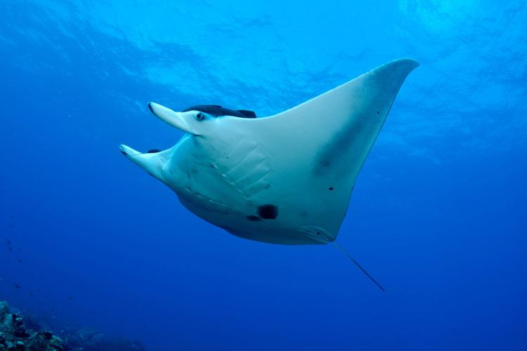

The Ray!
The giant manta ray is the worlds largest ray with a wingspan of up to 26 feet. They are filter feeders and eat large quantities of zooplankton. Giant manta rays are slow-growing, migratory animals with small, highly fragmented populations that are distributed across the world.
The main threat to the giant manta ray is commercial fishing, with the species both targeted and caught as bycatch in a number of global fisheries. The global population size is unknown. With the exception of Ecuador, the few regional population estimates appear to be small, ranging from around 600 to 2,000 individuals, and in areas subject to fishing, have significantly declined.